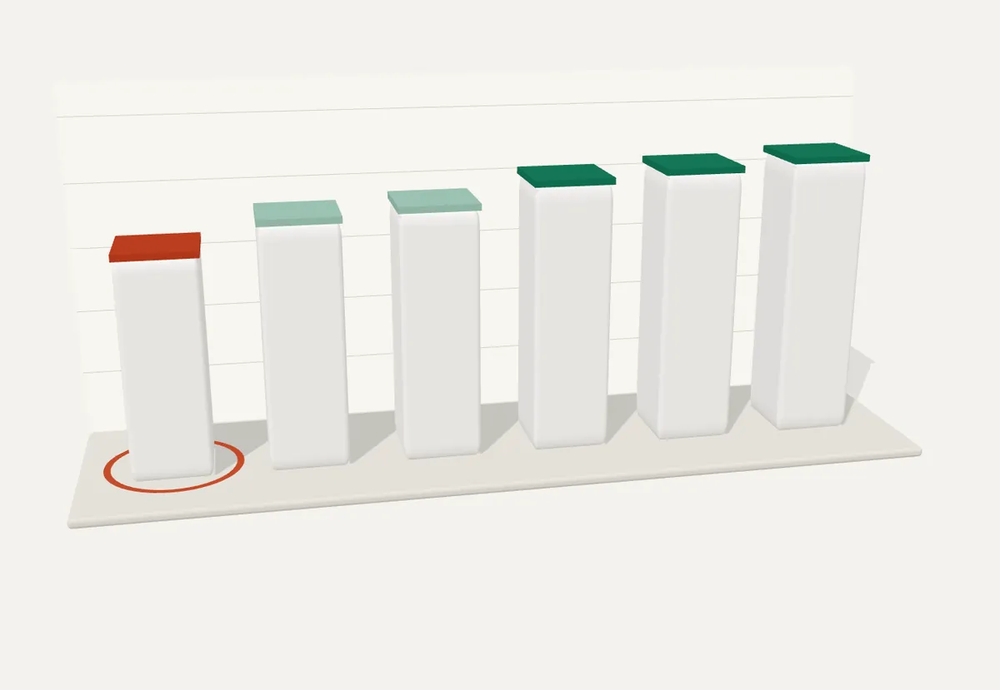

Choisir la procédure juridiquement sûre
La computation des seuils a fait passer le marché du site d’une procédure adaptée à un appel d’offres ouvert, pour un an reconductible trois fois.
La trace, AC32.02Caner Alpyürük, alternant acheteur à l’Hôpital Nord Franche-Comté
BUT GACO MCMO · BC2 · Participer au pilotage · Tronc commun GACO
Mesurer, comprendre l’écart, puis décider en connaissance de cause.
Travaillé jusqu’au niveau 3, en BUT 3 : Participer activement à l’amélioration du pilotage de l’organisation

Ce domaine couvre la participation au pilotage d’une organisation : son fonctionnement, ses règles de droit, ses chiffres, ses indicateurs et sa démarche qualité.
Dans un hôpital, chaque achat pèse sur un budget contraint : savoir lire une dépense, choisir la procédure juridiquement sûre et suivre des indicateurs fait partie du métier.
Énoncé du programme : Participer au pilotage interne de l’organisation
Chaque niveau a sa page : les apprentissages critiques dans les termes du programme, la situation où je les ai travaillés, mes traces et mon bilan. Les niveaux sont ceux travaillés, aucun résultat d’évaluation n’est publié.
Situations : Stage RH chez CF2P, Soutenons la Libye
Situation : Stage achats à l’HNFC
Situations : Alternance à l’HNFC, Refonte du site du GHT, Démarche qualité PERFORMANCE+
Quatre réalisations qui montrent ce domaine en pratique, chacune reliée à sa trace.
La computation des seuils a fait passer le marché du site d’une procédure adaptée à un appel d’offres ouvert, pour un an reconductible trois fois.
La trace, AC32.02Quatre familles d’indicateurs autour du Gantt du projet, et un rapport Power BI sur plus de 7 280 festivals à partir de data.gouv.fr.
La trace, AC32.01Questionnaire noté de 1 à 5, diagramme d’Ishikawa et plan d’action qui commence par le critère le moins bien noté : la disponibilité des équipements, à 3,3 sur 5.
La trace, AC32.04Coût de revient, marge sur coût variable et seuil de rentabilité, puis le même raisonnement appliqué en stage à la dépense de gants, suivie par service.
La trace, AC22.05Les six critères du questionnaire de satisfaction montent à leur note, puis se classent : le plan d’action commence par le plus faible.
| Critère | Note sur 5 |
|---|---|
| Accueil | 4,3 |
| Sécurité | 4,2 |
| Accompagnement des coachs | 4,1 |
| Horaires | 3,8 |
| Propreté des espaces et vestiaires | 3,7 |
| Disponibilité des équipements | 3,3 |
Les expériences où ce domaine a été travaillé en situation réelle, puis les études de cas qui le démontrent.
BUT 3 · En binôme
De l’engagement de la direction au plan d’action, la démarche qualité complète d’une salle de sport fictive, PERFORMANCE+.
BUT 3 · Individuel, en alternance
Réunir sur un seul site l’hôpital, le centre de soins de longue durée, l’institut de formation et le centre d’enseignement des soins d’urgence, en conciliant la communication, la DSI et la commande publique.
Explorer les autres domaines
Achats, vente et relation clientGestion de projetMarketing et internationalOmnicanal et digital